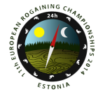

| Calendar of Events in 2014 | |
| Sunday 26th January Duration: 4hr & 8hr options Location: Akatarawas, Wellington |
Akatarawa Attack MTB Rogaine A MTB rogaine organised by the Hutt Valley Mountain-bike Club in the Akatarawa ranges that lie between Upper Hutt and Kapiti. Teams of 2 - 5 people. For complete information see the event website http://www.akattack.org.nz/. Entries due by 16th January. |
| 29th Jan to 12th Mar Duration: 3hr or 90min options Location: New Plymouth |
New Plymouth Urban Series A series of Wednesday evening Urban Rogaines organised by O Taranaki at weekly intervals from 29th January to 12th March in the New Plymouth area. 3hr or 90min options. See the maptalk calendar for more information. |
| 29th Jan to 26th Mar Duration: 1 hr Location: Rotorua and Tauranga |
Summer Nav Series A series of Wednesday evening 60 min Rogaines organised by Orienteering BOP at weekly intervals from 29th January to 26th March in the Rotorua and Tauranga areas. See the maptalk calendar for more information. |
| Thursday 6th February Duration: 3hr or 90min Location: Port Hills, Christchurch |
Canterbury Series Waitangi Day Rogaine Tim Farrant and team are putting on a Waitangi themed rogaine event on Thursday 6 February 2014 based in the Christchurch Port Hills. 3hr and 90minute options. See the event website for more information. Download and share the event poster. |
| Saturday 8th February Duration: 3hr & 1.5hr options Location: Whangamata |
Whangamata Waitangi Rogaine Organised by Ryan Thompson and friends this Rogaine, with 3hr and 1.5hr options, will be based around the beach, parks, coastal tracks and urban pathways of Whangamata. For detailed information see the event website at www.whangamataevents.co.nz/rogaine. |
| Sunday 23rd February Duration: 2hr Location: Rotorua |
MTB Adventure Quest The MTB Adventure Quest rogaine is back again this year as part of the Rotorua Bike Festival. The event will start and finish at the main Waipa State Mill Road car park, just out of Rotorua, and you can also check out the Waipa Bike Fair which will be happening at the same time. The MTB Adventure Quest is a fun bike-based navigation challenge where teams of 2 to 5 people try to collect as many check points as they can within 2 hours. Teams can earn bonus points by completing special mystery activities along the way - think Amazing Race style! The event is suitable for families with kids (including the littlies under 5 years old) through to Olympic cyclists. Every child who competes will receive a special certificate. There will also be lots of spot prizes from Macpac to give away. To enter and for more information check out the Orienteering Bay of Plenty website. Online entries close on February 19th. |
| Sunday 2nd March Duration: 6hr, 3hr & 3hr MTB options Location: Dunedin |
Suburbs to Surf Organised by Tim Jowett and located on the rural-urban fringe of the Otago Peninsula with about a third of the map in a suburban area. This is a "shoe-string" rogaine so that, rather than having controls, competitors will write down answers related to features at each control site visited. Take a look at the information sheet (10KB PDF). Contact is Tim Jowett (email: Jowti231@gmail.com, ph. 027 656 7251). |
| Sunday 9th March Duration: 2½hr & 90min Location: Whitecliffs, Canterbury |
Equestrian and mini-Foot Rogaines The 2½hr Equestrian event is for teams of 2 to 4 on horseback, registration from noon. Pre-entry is necessary for the equestrian rogaine. The 90 minute foot rogaine is for teams or individuals, registration from 9 am. Enter on the day for the foot rogaine but an email of number entering to Stuart Payne at oldhat@actrix.co.nz will guarantee Check out the flyer. Information and an entry form for the Equestrian rogaine are available at the Eyre Community Environmental Safety Society website. Organisers: Stuart Payne & Carol Fowler for Eyre Community Environmental Safety Society. |
| Saturday 15th March Duration: 3 hr Location: Castle Hill |
Bouldergaine Run by the New Zealand Alpine Club in association with PAPO the Bouldergaine is a hybrid of Rogaining and Bouldering. It combines Rogaining with rock climbing on boulders to a safe height without the need for equipment. Read the Alpine Club press release. Full details of the event can be found at www.nbs.org.nz |
| Saturday 22nd March (postponement date, if needed, 29th March) Duration: 90mins Location: Palmerston North |
Urban Fundraiser Rogaine This 90min Urban rogaine based on the Massey University campus is a fundraiser for the Massey Child Care Centre. It is child/buggy friendly but also caters for those who wish for a fast blowout. The event will be followed by a sausage sizzle and spot prizes. Meet at the Child Care Centre at 9.15am. Email Suz Clare for a registration form; check out Facebook and download the event flyer |
| 26th March, 9th April Duration: 2hr Location: Port Hills, Christchurch |
R&R Sport Wicked Autumn Series This year there will be two afterwork 2hr Rogaines on Wednesday evenings. The first event is on 26th March and the second on 9th April. Keep your eye on the Wicked Facebook for further information. |
| Saturday 29th March Duration: 13, 6 & 3hr family Location: Otago |
The Golden Road Rogaine POSTPONED - new date likely to be July 12th 2014 General Enquiries: Bob Cunninghame, signalhill@xtra.co.nz, ph. (03) 473 8330. |
| Sunday 30th March Duration: 3 & 4½ hr options Location: Geraldine region |
Geraldine Rogaine Autumn Muster (GRAM) Organised by the Geraldine High School PTA in the South Canterbury foothills at or near the location of the 2013 Heights of Winter event. There will be two options (3 and 4½ hours), with categories for school children and adults. Planner is Mike Harding & Controller is Stuart Payne. For more information and entry see the Geraldine High School website. Contact is mikeharding@ihug.co.nz |
| 15th Apr to 11th Nov Duration: 3hrs Location: Wellington region |
Welly Afterwork Rogaine Series Monthly 3hr afterwork events in the Wellington region, except for June and July. For more information see the Welly Rogaine website. |
| Saturday 26th April Duration: 12, 6 & 3hr family plus 6hr MTB Location: Lindis Valley, Central Otago |
Mt Outdoors Lindis Rogaine The Highland Events Autumn rogaine organised by Ed Stevens and Terry Davis will be run in the Lindis Valley on the Shirimar, Geordie Hills and Morven Hills Stations. There will be 12hr, 6hr and family 3hr events, and a 6hr MTB option, following the classic Rogaine format in challenging landscapes but softer than the Spring Bannockburn event. For information and online entry see the Highland Events website, http://www.highlandevents.co.nz/rogaine. Entries are open. |
| Sunday 4th May Duration: 3hrs Location: Marlborough |
"King of the Castle" Located within 30 minutes drive from Blenheim Town Centre the King of the Castle Rogaine will be held in classic rolling South Marlborough landscape. Controls will be located from sea level to a max of 280m. Lots of open land with gullies, defined ridges and spurs, and some scrubby areas and plantations to offer a challenge for all skill levels. Beaches and great views! See the event website for details and entry. Late fee applies for entries after 8am Thursday 1st May. Newly elected NZRA President Mondo Kopua looks forward to people coming to Marlborough for this event in another stunning location and notes, "We are fortunate to have so many areas that are ideal for rogaining and with the support and generosity of the landowners and local communities we get great pleasure out of hosting rogaines in our region." |
| 4th May to 8th June Duration: 90mins Location: Auckland region |
Auckland Rogaine Series Four 90min Sunday events in the Auckland region. For more information see the event website. |
| Sat/Sun 17th/18th May Duration: 24hrs Location: Canterbury |
T'Walk 2014 On yet again!! This will be the 48th running of this iconic event, organised by the University of Canterbury Tramping Club, the pioneer of long distance foot navigation events in NZ. It differs from a Rogaine in that the order of checkpoint visits is somewhat predetermined. This year T'Walk is two days after the full moon, it is great fun and a "not to be missed" event. See the T'Walk website for details. Entries open Monday 28th April and close Monday 12th May. |
| Sunday 18th May Duration: 3 & 6hr options Location: Wellington |
Metlink City Safari In the City Safari teams will be racing by foot, train, bus, cable car or ferry to find checkpoints spread at unique and interesting spots throughout the Wellington region. The course has been designed to reward smart use of public transport which adds a whole new level of strategy into the sport of rogaining. Live scoring will enable you to know how you are doing during the event (using your smartphone), and friends and family will be able to watch your progress from a big screen at the start finish line. For more detail see www.citysafari.org.nz. |
| 25th May thru 22nd June Duration: 3hrs Location: various NI |
Navquest Series The NavQuest is a series of four 3hr rogaines aimed at secondary school students, their families and teachers. Members of the public are more than welcome to join in by entering in the open category. Go to http://www.opc.org.nz/navquest/ for more information and to register a team online. The NavQuest is organised as a partnership between The Sir Edmund Hillary Outdoor Pursuits Centre of New Zealand (OPC) and NI orienteering clubs in Rotorua, Taupo, Wellington and Auckland. Coordinating organiser is Darren Ashmore. |
| 4th June to 25th June Duration: 3hr Location: Nelson region |
Nelson Winter Rogaine Series Four 3hr mid-week events in Nelson. For more information see the maptalk calendar. |
|
 |
European Championships 2014 7th - 8th June, 2014 The European Champs, based in the village of Orava in south-east Estonia and about 15km from the border with Russia, are to be run two months before the World Champs. Terrain varies from pine forest, mostly providing very good visibility, to swamps, bogs and marshes and picturesque lakes and rivers. See the event website for more detail as it becomes available. |
| Saturday 14th June Duration: 12hr & 6hr options Location: North Canterbury |
Heights of Winter 2014 CANCELLED - see the notification Please join us for the annual Heights of Winter Rogaine organised this year by NZRA. Entries, opening on 15th May, will be limited to 220 people in each of the 12hr and 6 hr events so get your entry in early. See the information sheet for further details and online entry. Entry enquiries to Emma de Lacey, nzra.entries@gmail.com. Direct any general enquiries to Grant Hunter at g.hunter@clear.net.nz. See the Instructions for Competitors. Call for volunteers: Douglas Wood and Colin Dixon are leading course planning and Grant Hunter the logistics and community links. They need support, ranging from field work to help on the day with tasks such as registration and at the start and finish, so please email them with your offer of assistance. There will also be an opportunity to learn how to operate the electronic scoring system Navlight (from an event management perspective) if you would like to add this to your really useful set of rogaining skills. If you are in doubt about the satisfaction gained from organising versus competing in rogaines read what motivates Grant. |
| Sunday 22nd June Duration: 3 & 6hr Location: Whakatane |
“Summer's on its Way” Urban and a little bit rural rogaine, 6 and 3 hour options, 1000 and 1300 start times, with maps given out 1/2hr before. Start/finish at Trident High School, Whakatane. It is a fundraiser event for a year 10 class heading to OPC Great Barrier. $15 entry. More the merrier, will be some very nice scenery to be seen.... active volcano, dormant volcanoes, expansive sandy beaches, historic pa, several cafes and footpaths (amount of which depends on your plan of attack). Contact is Alister Coulter. |
| Sunday 29th June Duration: 3hrs Location: Leith Saddle - Top of Motorway, Dunedin |
Hamels Haunts V This is an entry level event designed to be training for Spring Challenge and other longer navigation events. Registration from midday. Start at 1pm. Cost $10. Map - brand new, hand made. Food - sausage, bread and drink. Contact is Matt Bixley, matt.bixley@agresearch.co.nz or 021 046 9255. Consult https://www.facebook.com/events/719855094744304/ for up-to-date information. |
| 28th/29th June Duration: 24hrs & 6hr Location: Ireland |
"Garden of Ireland" Rogaine The 17th Setanta rogaine will be run in the Wicklow Mountains to the south of Dublin on the last weekend of June. It would be fun to join the Irish if you are over that way. For complete information see the event website. |
| Sunday 6th July Duration: 3 & 4hrs Location:Port Hills, Christchurch |
Canterbury Secondary Schools Rogaine The Peninsula and Plains Orienteers are organising a Canterbury Secondary School Rogaine on Sunday 6th July based at Victoria Park. Tim Farrant will be the planner. There will be a three and four hour options to follow the same format as the National Secondary Schools Rogaine in Rotorua on 9th August. The event will be open to anyone, and be a fund raiser to assist the top senior and junior teams to attend the National championships. See the PAPO website for details and entry. |
| Saturday 12th July Duration: 13, 6 & 3hr family Location: Otago |
The Golden Road Rogaine Organised by Bob Cunninghame and team, there will be a 13-hour “Classic”, a 6-hour “Introduction” and a 3-hour “Family Special”. The terrain, west of Waikouaiti and a one-hour drive from Dunedin, is relatively open farmland and tussock with rocks and scrub in places, plus some forest blocks. Schist and volcanic (basalt) outcrops and several distinct volcanic cones, with some steep gullies and deeply incised valleys, characterise the area. See the information sheet for further details and online entry. General Enquiries: Bob Cunninghame, signalhill@xtra.co.nz, ph. (03) 473 8330. |
| Saturday 9th August Options: Foot & MTB Location: Whakarewarewa Forest, Rotorua |
Great Forest Rogaine and NZ Secondary School Championships Orienteering Bay of Plenty (OBOP) will be running the popular Great Forest Rogaine on 9th August 2014 in the Whakarewarewa Forest, Rotorua. The event has 3 and 6 hour Foot and MTBO rogaine options. For more information and to enter check out www.obop.org.nz or email orienteeringbop@gmail.com OBOP will also be hosting the inaugural NZ Secondary School Rogaine Champs on the same day as an independent event. Senior (4 hour) and Junior (3 hour) Men, Women and Mixed category prizes will be up for grabs. There will also be special prizes for the school that enters the most teams and the Bay of Plenty team that has the best result. The NZ Secondary School Rogaine Champs is officially sanctioned by the NZ Secondary School Sports Council and is supported by Orienteering NZ. More information and the entry form can be found at www.orienteering.org.nz/nzss-rogaine-champs/ or through the OBOP website above. Download a poster. For any queries contact Suzanne Scott at suebrook08@gmail.com or phone 021 233 9078. |
| 16th - 17th August Duration: 24hrs Location: USA |
12th World Rogaining Championships The 12th World Rogaining Championships will be run in the Black Hills of South Dakota in the north central part of the USA. See the event website for further information. Registration will begin on 1st November 2013. To maximise your chances of being accepted into the event you should register within 14 days of registrations opening. |
| Sunday 17th August Duration: 3hrs Location: Wellington |
28th Winter Classic There will be a 3hr Rogaine event included with the Winter Classic organised by Bryan Teahan and Wellington Orienteering club. All are welcome as individuals or teams, and the Rogaine Team Explorer event includes categories for school teams or corporate. Bryan claims: “This year’s area is another cracker on a new map and area which can only add to the legend of the Winter Classic. Beautiful open pine forest in steep to rolling terrain, sprinkled with some open native bush gullies with rock and cliff features. As a navigator / explorer who craves the ultimate challenge, this year is definitely one not to miss.” For information and entry details see the website. |
| Saturday 6th September Duration: 3 & 6hr options Location: Nelson |
Wily Weka Challenge Organised by the Nelson Orienteering club this event, open to all ages and abilities, will take place through the Nelson Urban Area and parks including the Grampians, Botanics and City. Registration and the briefing, start and finish will all take place at the Nelson Marlborough Institute of Technology (NMIT) in Central Nelson. Take a look at the flyer. See the event website for more details and entry. Entries are now open. |
| Saturday 13th September Duration: 12, 6 & 3hr family plus 6hr MTB Location: Central Otago |
Highland Events Spring Rogaine Ed Stevens and Terry Davis are organising their usual Spring Rogaine. See the Highland Events website for detailed information. Entries are open. |
| 11th - 12th October Duration: 24hrs Location: Victoria |
"Goldfields Bonanza" Australasian Championships 2014 Complex mixture of spur/gully terrain in an old goldfields area in the Castlemaine region, 1.5hrs drive from Melbourne. There will be a 6hr event as well as the championship 24hr Rogaine. See the champs website. |
| 12th Oct to 30th Nov Duration: 2hrs Location: Waikato region |
Waikato Rogaine Series A series of four 2hr Sunday Rogaines: 12th Oct (1hr MTB + 2hr foot if you wish), 2nd Nov, 16th Nov, and 30th Nov. For more information see www.orienteeringwaikato.org.nz |
| Saturday, 18th October Duration: 3, 6, 12hr Location: Arrowtown |
EPIC Returns After a 4 year break Bruce McLeod and Phil Wood of EPIC (Enigmatic Pseudo Insane Challenge) fame are oganising a rogaine somewhere near Arrowtown. There will be 3hr, 6hr, and 12hr options with the latter being a T'Walk style event with accurately placed controls guaranteed. Turn up and relive the fond memories of EPIC's last event - the 2010 "Ophir Awesome EPIC". For further information see the EPIC website. |
| 18th - 19th October Duration: various Location: Rotorua |
Vegas Vindaloo MTBO Weekend The Vegas Vindaloo MTBO weekend includes a rogaine in Whaka Forest, a series of short sprints around Redwoods areas, and some longer classic courses at Tui Ridge. The rogaine will be two hours and will start at the far end of Blue Lake, using an area of the forest that is not so well used. Bonus points can be earned by completing the Chilli Challenge! Overall prizes will be on offer for those people who perform the best over all three weekend events. For more information check out the OrienteeringNZ and Orienteering Bay of Plenty websites. |
| Sunday 19th October Duration: 3hrs Location: Ahuriri Farm, near Tai Tapu, Canterbury |
Ahuriri Equestrian Rogaine Teams of 2 to 4 on horseback. In support of the GRACI Foundation (Gynaecology Cancer Research Trust). For full information see the Facebook page. |
| Saturday 1st November Duration: 3hr Location: Glendhu Station, Wanaka |
Holy Family 3 Hour Rogaine This 3hr family friendly Rogaine will be based at the picturesque Glendhu Station, Wanaka. The course set by Ed Stevens (Highland Events) will take full advantage of the hilly, but benign, farmland terrain. Sign up on the online registration form now available. Check out the poster. |
| Sunday 9th November Duration: 6hr & 3hr Location: Banks Peninsula, Canterbury |
Mount Evans Rogaine The Mount Evans Rogaine will be based at not-often-visited Camp Bay, 3.5km further around the harbour from Purau Bay. The terrain is hilly farmland with a mix of open grassland, scrub, native forest, and some plantations. People will be rewarded with great views out across the harbour and beyond. See the details, download and distribute the poster. Chief organiser is Alastair McDowell, info@canterburyrogaine.com or 021 1174 199. Entries are open. |
| Saturday 29th November Duration: 3, 6 or 9hr Location: Akatarawas, Wellington |
Big Trig 2014 Organised by O Hutt Valley in the Akatarawas. Gordon Balfour is the chief planner. For further information see the event website. Download a flyer. Entries open end of September. |
| 6th - 7th December Duration: 24hrs + shorter non-championship options Location: Central Otago |
14th New Zealand Championships The 2014 New Zealand Championships will be run in the Nevis valley, Central Otago in early December. There will be 12, 6 & 3hr family rogaines in addition to the 24hr championship. Chief organisers will be the experienced Highland Events team of Ed Stevens and Terry Davis who are well known for their twice yearly Wanaka Rogaines. Pete Squires is the NZRA representative. For more information and to sign up see the Highland Events website. |
| Wednesday 17th December Duration: 3 hrs Location: Port Hills, ChCh |
Christmas Twilight 2014 Ho Ho Ho! It's time to get ready for Emily and Chris Forne's annual Christmas Rogaine, afterwork from 6 - 9pm on 17th December. Starting from a new exciting location up on the summit road near the sign of the Bellbird the course will include some relatively unexplored areas recently opened post earthquake. For more information and entry details see http://christmas-rogaine.blogspot.co.nz/. There will be a brief prize giving with yummy cakes and other christmas fare. |
| | |
| | |